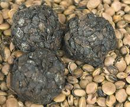
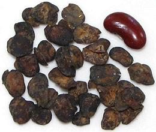
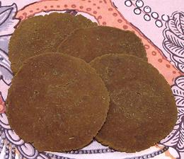

 |
Sumbala / DawadawaAfrica, West - [Sumbala (Mandang); Soumbala (French); Dawadawa (Hausa); Ntetou (Wolof); Iru (Yoruba); Kainda (Krio); Une (Nigeria)] | ||||
| Makes: Effort: Sched: DoAhead: |
*** hrs Yes |
This is a standard ingredient used in much of sub-Saharan Africa. It is traditionally made from Néré, seeds from the pods of the African Locust tree (Parkia biglobosa). | |||
| Unfortunately, Néré seeds are becoming difficult to obtain even in West Africa, so in some regions the local women have started using Soybeans instead. The fermented beans are formed into balls or patties and dried. The photo shows Sumbala Balls on a bed of the Néré seeds from which they were made. Photo by Rik Schuiling distributed under license Creative Commons Attribution-Share Alike 3.0 Unported. | |||||
|

The photo to the left is of Fermented Locust Bean Seeds (Iru) purchased
on-line in North America for 2018 US $3.69 / ounce. Product of Nigeria,
they should be suitable as a starter for fermenting soybeans.
Shan Tua Nao Disks Since West Africans are now using Soybeans instead of the difficult to obtain African Locust Beans, the process is exactly the same as in our recipe for Burmese Shan Tua Nao Disks. While Locust Beans are still preferred where available, Soybeans are much easier to process, as they don't have hard shells that need to be removed. The Shan Disk shape is very efficient as it dries well and can be stored for many months, but you could form the paste into balls or patties if you wish. If you wish, you could order some imported Sumbala and use some powder to initiate your fermentation. I use a powerful food processor to grind the beans into paste. If
you are using more primitive methods, or want the rustic appearance
of nearly whole crushed beans in balls or patties, you will want to
skin the beans before fermenting.
Skinning Soybeans
|